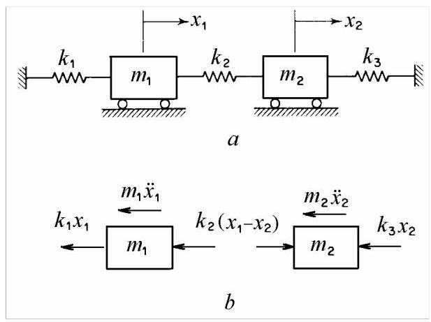
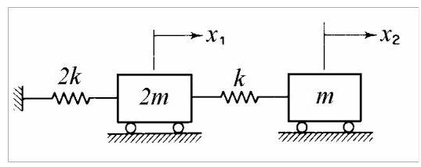
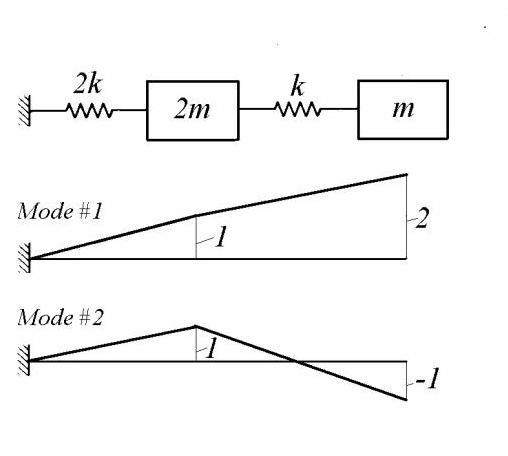

第14篇
4. 二自由度系统¶
振动系统的自由度等于完全描述其运动所需的独立坐标数。
本章将两自由度系统作为离散系统中最简单的情况进行分析，并作为引入具有更多自由度系统的入门。为了为多自由度系统做准备，引入了矩阵表示法，作为表达运动方程和动态响应的紧凑方式。
第2章表明，无阻尼单自由度系统的自由振动是一种在系统固有频率下的简谐运动，称为固有振动。相比之下，无阻尼多自由度系统的自由振动是周期性的，由多个不同固有频率下的振动组成。它可以表示为谐波分量的总和，每个分量对应一个特定的固有频率和位移构型，称为固有振型。在固有振型中的运动在所有系统坐标上是同步且简谐的。
离散系统的动态响应可以用联立常微分方程描述。通过适当选择坐标，称为主坐标或模态坐标，方程可以解耦并独立求解。模态坐标表示实际位移的线性组合。反之，运动也可以视为由模态坐标定义的固有振型振动的叠加。
两自由度系统有两个固有频率，在受迫振动中，对于小阻尼，可能会出现两个共振。对初始激励的自由响应和对外部激励的受迫响应可以用固有振型表示，其形状由相对于质量和刚度矩阵相互正交的向量定义。对简谐激励的受迫响应也可以通过简单地使用克拉默法则计算。当激励频率等于系统的任一固有频率时，发生共振。反共振也可能发生在等于质量-弹簧子系统固有频率的频率处。
本章内容主要涉及固有频率和振型的计算。首先使用模态分析和直接频谱分析技术研究无阻尼系统的受迫振动。然后考虑阻尼受迫振动。
4.1 耦合平移¶
以下考虑两自由度质量-弹簧系统，其中集中质量具有单向平移运动。
4.1.1 运动方程¶
考虑图4.1所示的系统，\(a\)它由两个质量\({m}_{1}\)和\({m}_{2}\)组成，通过弹簧\({k}_{1}\)和\({k}_{3}\)连接到固定点，并通过“耦合弹簧”\({k}_{2}\)连接在一起。

图4.1
假设质量被引导仅沿水平方向移动，系统的构型完全由它们相对于平衡位置的瞬时位移\({x}_{1}\)和\({x}_{2}\)决定。该系统具有两个自由度。
利用图4.1的受力图，\(b\)和达朗贝尔原理(外力和惯性力的动态平衡)，可以写出运动方程
重新整理后，这些方程变为
这是一组“耦合”的二阶线性常系数微分方程。两个坐标之间的耦合是由于刚度\({k}_{2}\)。如果\({k}_{2} = 0\)，方程(4.1)变为独立的，图4.1的系统退化为两个单自由度系统。
方程(4.1)可以写成
或以紧凑形式
其中\(\left\lbrack m\right\rbrack\)为质量矩阵(mass matrix)，\(\left\lbrack k\right\rbrack\)为刚度矩阵(stiffness matrix)，\(\{ x\}\)为位移列向量(column vector of displacements)。注意，方阵用方括号表示，列向量用花括号表示。质量矩阵和刚度矩阵始终对称，因此它们等于各自的转置。
质量矩阵为对角矩阵。耦合由刚度矩阵的非对角元素产生。
4.1.2 自由振动·固有模态¶
我们来考察两个质量作同步简谐运动的条件，即系统在自然振动中表现为单自由度系统的情况。
我们假设解的形式为
并研究这种运动得以成立的条件。我们所寻求的运动，是两个瞬时位移之比在整个运动过程中保持恒定。
系统构形在运动过程中保持不变，其挠曲形状在任何时刻都保持相似。
将解(4.5)代入微分方程(4.1)，得到代数方程
联立齐次方程(4.7)存在非平凡解的条件是系数\({a}_{1}\)和\({a}_{2}\)的行列式为零。
可写成
这是关于\({\omega }^{2}\)的二次方程，称为特征方程(characteristic equation)或频率方程(frequency equation)。其根\({\omega }_{1}^{2}\)和\({\omega }_{2}^{2}\)为实数且为正。\({\omega }_{1}\)和\({\omega }_{2}\)称为固有频率(natural frequencies)或本征频率(eigenfrequencies)，因为它们仅取决于系统的质量和刚度参数。
由于方程组(4.7)为齐次，振幅\({a}_{1}\)和\({a}_{2}\)无法单独确定，只能确定它们的比值\(\mu = {a}_{2}/{a}_{1}\)。
对于\({\omega }_{1}\)，振幅比为
对于\({\omega }_{2}\)，振幅比为
比值(4.10)和(4.11)分别决定了系统以频率\({\omega }_{1}\)和\({\omega }_{2}\)作同步运动时的形状。若给每个比值中的一个元素赋予任意值，则另一元素的值可由上述表达式得出，此过程称为归一化(normalisation)。
固有频率及相应的振幅比决定了实现同步简谐运动的条件，即振动的固有模态。一个振动模态由两个参数定义:固有频率和模态形状(mode shape)。模态形状可用列向量表示
称为模态向量(modal vectors)。
在(4.12)中，模态向量以第一个元素等于1进行归一化。归一化后的向量被称为表示正则模态的振型。
两种可能的同步运动由下式给出
自由振动的通解为
在(4.14)中，四个积分常数\({C}_{1},{C}_{2},{\varphi }_{1},{\varphi }_{2}\)由四个初始条件——\(t = 0\)时刻的位移和速度——确定。
对于任意初始条件，二自由度系统的自由振动是一种周期运动，由系统的两个固有振动模态叠加而成，即两个频率等于系统固有频率的谐波运动。可以证明，若初始速度为零且初始位移与某一模态振型相似，则自由运动为同步且纯谐波，并以该模态的固有频率进行。若初始变形形状与模态振型相似，系统即可按纯模态振动。例4.1
考虑图4.2所示系统，求其固有振动模态。

图4.2
解:运动方程可写为
假设解的形式为
得到
或除以\(k\)，
其中
存在非零解的条件为
其解为
固有频率为
将第一个元素设为1，第一阶模态向量(modal vector)表示为
第二个模态向量由以下公式计算得出
振型(mode shapes)如图4.3所示。在第一阶模态中，两个质量块同向运动，要么都向右，要么都向左，质量块\(m\)的位移始终是质量块\({2m}\)的两倍。在第二阶模态中，两个质量块反向运动，位移大小相同。弹簧\(k\)的中点保持静止，因此它是一个节点(nodal point)。若将该点固定，运动状态不会发生变化。第二根弹簧被拆分为两根刚度为\({2k}\)的弹簧。于是，质量块\({2m}\)通过两根并联的刚度为\({2k}\)的弹簧与地相连，等效刚度为\({4k}\)；而质量块\(m\)则通过一根刚度为\({2k}\)的弹簧连接。两个子系统的固有频率(natural frequency)均为\({\omega }_{2}\)。

图4.3
总结来说，第一阶固有模态(normal mode)具有固有频率(natural frequency)\({\omega }_{1} = \frac{1}{\sqrt{2}}\sqrt{\frac{k}{m}}\)和模态振型(mode shape)\(\{ u{\} }_{1} = \left\{ \begin{array}{l} 1 \\ 2 \end{array}\right\}\)，而第二阶固有模态具有固有频率\({\omega }_{2} = \sqrt{2}\sqrt{\frac{k}{m}}\)和模态振型\(\{ u{\} }_{2} = \left\{ \begin{matrix} 1 \\ - 1 \end{matrix}\right\}\)。若系统受到初始扰动\({x}_{1} = 1\)和\({x}_{2} = 2\)后释放，其随后的运动将是以频率\({\omega }_{1} = {0.207}\sqrt{k/m}\)的纯简谐运动。若初始位移为\({x}_{1} = 1\)和\({x}_{2} = - 1\)，则运动将以频率\({\omega }_{2} = {1.414}\sqrt{k/m}\)的简谐形式进行。
Matlab Demo¶
取 \(m = 1 kg\), \(k = 2 N /m\),给出一个算例的数值解，并合理绘制了振型。 (第一阶振型): 两个质量块（蓝色方块）相对于其平衡位置（空心方块）都向右移动，且第二个质量块的移动距离是第一个的两倍。红色的箭头都指向右方，清晰地表示这是同向运动。(第二阶振型): 第一个质量块向右移动，而第二个质量块向左移动了相同的距离。红色箭头方向相反，表示这是反相运动。

% --- 清除变量和图形 ---
clear;
clc;
close all; % 关闭所有已打开的图形窗口
% --- 数值计算部分 (与上一问相同) ---
m = 1; % 质量 (kg)
k = 2; % 弹簧刚度 (N/m)
M = [2*m, 0; 0, m];
K = [3*k, -k; -k, k];
[V, D] = eig(K, M);
natural_frequencies_rad_s = sqrt(diag(D));
% --- 排序并归一化振型 ---
if natural_frequencies_rad_s(1) < natural_frequencies_rad_s(2)
omega1 = natural_frequencies_rad_s(1);
omega2 = natural_frequencies_rad_s(2);
u1 = V(:,1) / V(1,1); % 提取并归一化第一阶振型
u2 = V(:,2) / V(1,2); % 提取并归一化第二阶振型
else
omega1 = natural_frequencies_rad_s(2);
omega2 = natural_frequencies_rad_s(1);
u1 = V(:,2) / V(1,2);
u2 = V(:,1) / V(1,1);
end
% --- 可视化部分 ---
figure('Name', '系统振型可视化', 'Position', [100, 100, 800, 600]);
% 定义平衡位置坐标以便绘图
x_eq = [2, 4]; % m1 和 m2 的平衡位置 x 坐标
y_pos = 0; % y 坐标
% --- 绘制第一阶振型 ---
subplot(2, 1, 1);
hold on;
grid on;
% 绘制平衡位置 (虚线表示)
plot(x_eq, [y_pos, y_pos], 's', 'MarkerSize', 15, 'MarkerEdgeColor', 'k', 'MarkerFaceColor', 'none', 'LineStyle', '--');
plot([0, x_eq(1)], [y_pos, y_pos], 'k--');
plot([x_eq(1), x_eq(2)], [y_pos, y_pos], 'k--');
text(x_eq(1), y_pos + 0.2, 'm1_{eq}', 'HorizontalAlignment', 'center');
text(x_eq(2), y_pos + 0.2, 'm2_{eq}', 'HorizontalAlignment', 'center');
% 绘制振动位移 (实线表示)
scale_factor = 0.5; % 缩放因子，让位移更明显
displaced_pos_1 = x_eq + scale_factor * u1';
plot(displaced_pos_1, [y_pos, y_pos], 's', 'MarkerSize', 15, 'MarkerEdgeColor', 'b', 'MarkerFaceColor', 'b');
plot([0, displaced_pos_1(1)], [y_pos, y_pos], 'b-');
plot([displaced_pos_1(1), displaced_pos_1(2)], [y_pos, y_pos], 'b-');
text(displaced_pos_1(1), y_pos - 0.2, 'm1', 'HorizontalAlignment', 'center', 'Color', 'b');
text(displaced_pos_1(2), y_pos - 0.2, 'm2', 'HorizontalAlignment', 'center', 'Color', 'b');
% 绘制位移箭头
for i = 1:2
quiver(x_eq(i), y_pos, scale_factor * u1(i), 0, 'AutoScale', 'off', 'Color', 'r', 'LineWidth', 2, 'MaxHeadSize', 0.5);
end
title(sprintf('第一阶振型 (ω₁ = %.2f rad/s) - 同向运动', omega1));
xlabel('位移 (x)');
yticks([]);
xlim([0, 6]);
ylim([-1, 1]);
legend('平衡位置', '振动位移', '位移方向');
hold off;
% --- 绘制第二阶振型 ---
subplot(2, 1, 2);
hold on;
grid on;
% 绘制平衡位置 (虚线表示)
plot(x_eq, [y_pos, y_pos], 's', 'MarkerSize', 15, 'MarkerEdgeColor', 'k', 'MarkerFaceColor', 'none', 'LineStyle', '--');
plot([0, x_eq(1)], [y_pos, y_pos], 'k--');
plot([x_eq(1), x_eq(2)], [y_pos, y_pos], 'k--');
text(x_eq(1), y_pos + 0.2, 'm1_{eq}', 'HorizontalAlignment', 'center');
text(x_eq(2), y_pos + 0.2, 'm2_{eq}', 'HorizontalAlignment', 'center');
% 绘制振动位移 (实线表示)
displaced_pos_2 = x_eq + scale_factor * u2';
plot(displaced_pos_2, [y_pos, y_pos], 's', 'MarkerSize', 15, 'MarkerEdgeColor', 'b', 'MarkerFaceColor', 'b');
plot([0, displaced_pos_2(1)], [y_pos, y_pos], 'b-');
plot([displaced_pos_2(1), displaced_pos_2(2)], [y_pos, y_pos], 'b-');
text(displaced_pos_2(1), y_pos - 0.2, 'm1', 'HorizontalAlignment', 'center', 'Color', 'b');
text(displaced_pos_2(2), y_pos - 0.2, 'm2', 'HorizontalAlignment', 'center', 'Color', 'b');
% 绘制位移箭头
for i = 1:2
quiver(x_eq(i), y_pos, scale_factor * u2(i), 0, 'AutoScale', 'off', 'Color', 'r', 'LineWidth', 2, 'MaxHeadSize', 0.5);
end
title(sprintf('第二阶振型 (ω₂ = %.2f rad/s) - 反向运动', omega2));
xlabel('位移 (x)');
yticks([]);
xlim([0, 6]);
ylim([-1, 1]);
legend('平衡位置', '振动位移', '位移方向');
hold off;